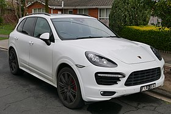

| more images |
The Porsche Cayenne (Type 9PA, Designated 955) is a mid-size luxury crossover sport utility vehicle produced by the German manufacturer Porsche since 2002, with North American sales beginning in 2003. It is the first V8-engined vehicle built by Porsche since 1995, when the Porsche 928 was discontinued. It is also Porsche's first off road Varient sports car since its Super and Junior tractors of 1950s, and the first Porsche with four doors. Since 2008, all engines have featured direct injection technology.
The second-generation Cayenne (Type 92A) was unveiled at the 2010 Geneva Motor Show in March following an online reveal. Although the Cayenne shares its platform, body frame and doors with the similar Volkswagen Touareg and Audi Q7, all other aspects of vehicle design, tuning and production are done in-house at Porsche. The second generation received a facelift in 2014 with minor external changes, and introduced a new plug-in E-Hybrid version, with its public launch at the Paris Motor Show |